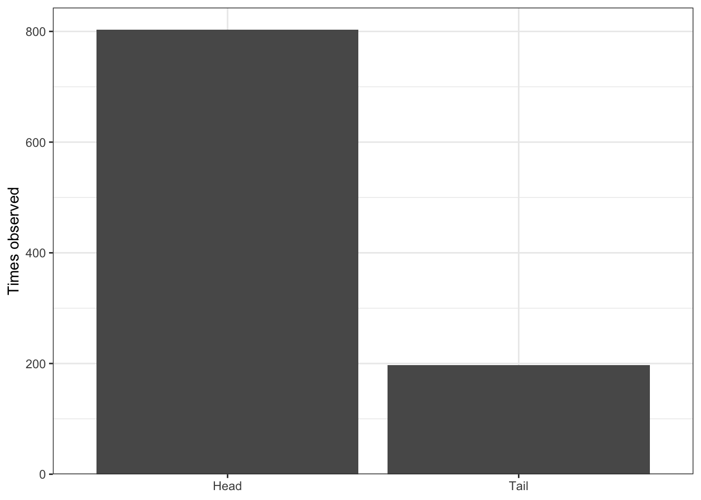
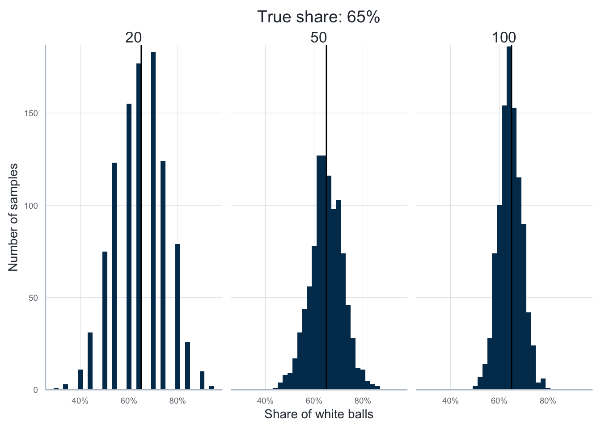

library(here)
library(tidyr)
library(data.table)
library(dplyr)
library(ggplot2)
library(scales)
library(purrr)
library(icaeDesign)This Tutorial explains the concept behind, and the implementation of Monte Carlo Simulations (MCS) in R. To implement MCS, we will make use of one of the following two tools: for-loops or the map-functions from the package purrr. Therefore, the tutorial also contains a general methodological section on these two approaches that you might read independently of the particular applications to MCS below. If you want to read a bit more about the topic of the tutorial, you may have a look at chapter 21 of R for Data Science.
This tutorial assumes you are using a typical directory structure as described in the respective tutorial. During this tutorial we will use the following packages:
The technical part: doing iteration tasks
Whenever you are doing a certain task more than twice you should immediately become suspicious and ask yourself whether you can automate the task. We already discussed the reasons behind this rationale and introduced one important way to achieve automation: the use of functions.
Here we talk about a general approach that complements the use of functions when it comes to automation: the idea of iteration.
Here we focus on two alternative ways of how to implement iterations in R: using for-loops, or a map-function from the package purrr. The latter option is clearer and more concise, the former is more flexible and intuitive. So, its generally good to know about both ways and then choose the approach that you find more appealing for the case at hand.
As you will see below, the two iteration concepts and functions and complements, not substitutes: often, especially in the context of MCS, you will write functions that you then combine with the iteration tools described below.
For loops
The idea of a for-loop is to ‘loop over’ an object, an do something for (or on) every element in this object.
In general, every for-loop (should) consist of three parts:
- The output container
- The looping sequence
- The action body
Below we is an example loop that loops through a list with three vectors as elements elements, and computes the mean for each element of the list. Before we inspect the loop as such, this is the list we are looping over:
base_list <- list(
"element_1" = c(1, 4, 5, 6),
"element_2" = c(9, 2, 2, 8),
"element_3" = c(4, 3, 0, 7)
)And this is how the loop looks like:
result <- rep(NA, length(base_list)) # The output container
for (i in seq_along(base_list)) { # The looping sequence
result[[i]] <- mean(base_list[[i]]) # The action body
}The first part is actually located outside the for-loop in a strict sense. But for the sake of efficiency, it is very important that you prepare a vector into which you can save the results of your loop. The vector should be of the same length as your loop will have iterations, and it is a good idea to use a vector full of NAs that are then replaced during the actual loop. Thus, the length of the output contains should equal the length of the object over which you are looping.
The second part is the looping sequence, and it determines the number of times your loop will iterate the task that is specified in the action body below. In the case above, we want to compute the mean for each element of base_list. In other words: we are looping over each element of base_list and the loop will comprise of three iterations.
The looping sequence always starts with the keyword for and an opening bracket. Then you specify a keyword that can be an (almost) arbitrary word. But usually, one uses a single letter, most commonly the letter ‘i’. This letter will take a different value during each iteration of the loop. The value it takes is specified by the vector that comes after the next keyword in: in the case above, this sequence is created by seq_along(base_list):
seq_along(base_list)[1] 1 2 3As you can see it is an index vector, i.e. a vector that starts with 1, only contains subsequent integers, and has so many elements as the object that has been passed as an argument to seq_along().
In the case above, this means that in the first iteration of the loop, i takes the value 1. In the second iteration it takes the value 2. And in the third and last iteration it takes the value 3. You could make this visible by writing a loop like this:
for (i in seq_along(base_list)){
print(i)
}[1] 1
[1] 2
[1] 3In principle, the keyword of your loop can take arbitrary values. For instance you could also loop over the names of base_list:
for (i in names(base_list)){
print(i)
}[1] "element_1"
[1] "element_2"
[1] "element_3"But this is usually not a very good idea. It is usually best to loop over an index vector of the main object of interest.
The third part of the loop is the action body. This is where the interesting code resides in, and where you determine what should be done during each iteration of the loop. Here, the code usually produces one result per iteration that should be allocated to the output contained created in the first step.
In the present case, we wanted to compute the mean for each element of the list base_list. Thus, our action body only consists of a call of the function mean, and then saves the result in the initial output container. If we then inspect the output container, we see that all the NAs were replaced by the means of the respective elements of base_list:
result <- rep(NA, length(base_list)) # The output container
print(result) # Only contains NAs[1] NA NA NAfor (i in seq_along(base_list)) { # The looping sequence
result[[i]] <- mean(base_list[[i]]) # The action body
}
print(result) # NAs were replaced by the means[1] 4.00 5.25 3.50While the loop above was very simple, the basic concept is extremely powerful: the action body of a loop can be of arbitrary complexity, making for loops a very powerful programming tool. But caution: very complex computations take time, and iterating them many times using a for-loop can take a lot of time.
Here are some general tips for developing for-loops:
- Before writing a long loop, write a short loop that only has two or three iterations. Once you are sure that this reduced loop does what it was meant to be you can extend the looping sequence.
- When developing a loop, make sure that everything goes as planned by adding many
print()statements into the action body; this is especially useful for your looping keywordisince this makes explicit what you are actually looping over. - Always loop over the indices of the object of interest, never over its elements. If you just want to iterate a task, you can loop over the indices of a simple sequence of the desired length. In any case, the looping sequence should be built by using
seq_along()orseq_len().
Before proceeding with the tutorial, it might be a good idea to practice. Here are some suggestions for exercises (you find possible solutions here):
- Write a for-loop that loops over the vector
c(1,2,3,4,5)and computes the square root for each element. - Write a for loop that draws 10 numbers from a normal distribution with mean
0and standard deviation1. You can get a single draw by callingrnorm(1):
rnorm(1)[1] -0.827282- Write a for-loop that loops over the columns of the following tibble, and computes the median of the elements in each column:
ex_tib <- tibble::tibble(
"a" = rnorm(5, mean = 5, sd = 2),
"b" = rpois(5, lambda = 3),
"c" = rcauchy(5, location = 3, scale = 2)
)
ex_tib# A tibble: 5 × 3
a b c
<dbl> <int> <dbl>
1 6.36 2 4.61
2 1.79 1 2.76
3 5.42 3 0.994
4 4.66 8 1.09
5 3.01 5 4.38 The map-functions from the purrr-package
The package purrr provides a number of functions that are designed to facilitate the development of iteration tasks. To this end, they allow you to, first, think about how to accomplish what you want to do for a single element of the object of interest and then, second, simply pass your solution to a function from the map-family and let it take care of the iteration.
The map-family is made up of five functions, which only differ by the type of output they produce: map(), which returns output in the form of a list, as well as map_lgl(), map_int(), map_dbl(), and map_chr(), which return output in the form of an atomic vector of type logical, integer, double, and character, respectively.
All five functions, however, work very similarly and take the same arguments, which means: once you understood one of them you understood all of them. All take two mandatory arguments: .x and .f. The first argument, .x, specifies a vector, and the second, .f, a function that gets applied to each element of the vector.
Lets consider one of the examples above: take our list base_list and compute the mean for each of its elements. Since base_list is the object over which we want to iterate it is passed to the function via the argument .x, and since we want to compute the mean, we pass the function mean() via the argument .f. In the following case we use purrr::map(), so the result will be a list:
purrr::map(.x = base_list, .f = mean)$element_1
[1] 4
$element_2
[1] 5.25
$element_3
[1] 3.5If we would like the result to be, for instance, of type double we simply use purrr::map_dbl() instead:
purrr::map_dbl(.x = base_list, .f = mean)element_1 element_2 element_3
4.00 5.25 3.50 Sometimes you want to pass a function with optional arguments to .f. The following application, for instance, does not compute the mean if there are NAs in the vectors:
input_vec <- list(c(1, 4, NA, 2), c(NA, NA, 3, 0), c(9, 8, 3, 4))
purrr::map_dbl(.x = input_vec, .f = mean)[1] NA NA 6To avoid this we need to set the optional argument na.rm of mean() to TRUE:
purrr::map_dbl(.x = input_vec, .f = ~mean(x = .x, na.rm=TRUE))[1] 2.333333 1.500000 6.000000As you can see we added a ~ in front of the function name and then passed to the first argument of the function the object over which we want to iterate as .x. Then we can add additional arguments as desired.
It is now a good idea to practice the use of the map-functions. Note that the exercises are very similar to the ones from the section on for-loops above. This is because for-loops and the map-functions are geared to do the same things just in different ways (again, the solutions can be found here).
Compute the square root for each element of the vector
c(1,2,3,4,5)by using a map-function frompurrr. In the first case, your solution should take the form of a list, in the second case an atomic vector of typecharacter.Draw 10 numbers from a normal distribution with mean
2and standard deviation4. Again, use a map-function frompurrr´ and return the result one time as an atomic vector of typedoubleand one time of typecharacter`.Computes the median of the elements in each column of the tibble
ex_tibas defined above. The result should come in form of alist.
The applied part: doing Monte Carlo Simulations in R
The basic idea of a MCS is to repeat a particular random process many times. It does not come to a surprise that this is not difficult to do with the tools we just acquired.
The overall workflow
Conducting a MCS always involves the following steps:
- Define the random process to be analysed
- Repeat the random process many times
- Summarize the simulation results
Technically, there are two alternative ways of how to implement a MCS in R: using for-loops, or a map-function from the package purrr, as described above. The latter option is clearer and more concise, the former is more flexible and intuitive. Below we use both alternatives, so its your choice of how you are conducting your own experiments.
A simple example
We start with a simple example that does not relate to the topic of sampling. Then we consider a more complex example and replicate the example from the lecture slides where we drew a sample from the ball pit.
The first example we consider is a MCS of an unfair coin. Assume we want to throw the coin many times to figure our the probability for the coin to show ‘head’.
In the first step we need to define the random process. In the present case this is the process of throwing a coin that shows ‘head’ with a certain probability.1 To this end, we define a function that does exactly this:
#' Throwing a coin
throw_coin <- function(prob_head){
sample(c("Head", "Tail"), size = 1, prob = c(prob_head, 1-prob_head))
}In the second case, we repeat the random process. Lets do this 1000 times, assuming that the probability for our unfair coin to show ‘head’ is set to 80%. Using a for loop this would look like this:
iterations <- 1000
probability_head <- 0.8
output_container <- rep(NA, iterations)
for (i in seq_len(iterations)){
output_container[i] <- throw_coin(prob_head = probability_head)
}If we used a map-function we would write the following:
map_output <- map_chr(.x = 1:iterations, ~throw_coin(prob_head = 0.8))Both approaches accomplish the same thing. We can now summarize or visualize the results. We could do this by using quantitative indicators, but the most common and usually most illustrative way is to use a histogram. We can do this by using ggplot2::ggplot(), we only need to transform our output container into a tibble:
output_tib <- tibble::tibble(map_output)
ggplot(data = output_tib, aes(x=map_output)) +
scale_y_continuous(expand = expansion(add = c(0, 40))) +
labs(y = "Times observed") +
geom_histogram(stat = "count") +
theme_bw() + theme(axis.title.x = element_blank())
A more complex example from sampling
In this case we want to simulate the act of drawing a sample from an artificial population of a ball pid.
This time, the first step involves the notion of a population since it represents the drawing of sample from this population. Thus, in a very first step we need to create such a population. In our case, this is a ball pid with 5000 balls, 65 per cent of which are white and 35 per cent of which are grey:
ball_pid_size <- 5000
ball_pid_share_white <- 0.65
white_balls <- as.integer(ball_pid_share_white*ball_pid_size)
grey_balls <- ball_pid_size - white_balls
ball_pid_colors <- c(rep("white", white_balls), rep("grey", grey_balls))
ball_pid <- tibble::tibble(
id = seq(1, ball_pid_size),
color = sample(ball_pid_colors)
)
head(ball_pid, 4)# A tibble: 4 × 2
id color
<int> <chr>
1 1 white
2 2 white
3 3 white
4 4 whiteNow we can write a function that formalizes the act of drawing a sample from the ball pid and computing the share of white balls:
#' Function that takes a sample of balls and computes share of white balls
sample_balls <- function(bowl, sample_size, replace_balls=FALSE){
sample_obtained <- sample(x = bowl, size = sample_size, replace = replace_balls)
sum(sample_obtained == "white") / sample_size
}We now conduct the MCS by iterating the process of drawing such a sample 1000 times. Suppose we want to use our MCS to study the effect of taking samples of different sizes, say 20, 50, or 100. Using a for-loop this could look like this:
n_samples <- 1000
results_n20 <- rep(NA, n_samples)
results_n50 <- rep(NA, n_samples)
results_n100 <- rep(NA, n_samples)
for (i in seq_len(n_samples)){
results_n20[i] <- sample_balls(bowl = ball_pid$color, sample_size = 20)
results_n50[i] <- sample_balls(bowl = ball_pid$color, sample_size = 50)
results_n100[i] <- sample_balls(bowl = ball_pid$color, sample_size = 100)
}
result_table <- tibble(
sample_size20 = results_n20,
sample_size50 = results_n50,
sample_size100 = results_n100
)A variant with a map-function would look like this:
results_n20_map <- purrr::map_dbl(
.x = 1:n_samples,
.f = ~sample_balls(bowl = ball_pid$color, sample_size = 20))
results_n50_map <- purrr::map_dbl(
.x = 1:n_samples,
.f = ~sample_balls(bowl = ball_pid$color, sample_size = 50))
results_n100_map <- purrr::map_dbl(
.x = 1:n_samples,
.f = ~sample_balls(bowl = ball_pid$color, sample_size = 100))Should we create a new population for during each iteration? It depends on the question asked. If you are interested in one particular population, you should keep this population fixed over all iteration. However, if you are interested in more general results for a population that itself involves random noise, it might be appropriate the re-generate the population for each iteration of your simulation. In the cases considered here, however, we can treat the population as fixed.
We can now visualize our results using a histogram:
hist_visualization <- result_table %>%
pivot_longer(cols = everything(),
names_to = "Sample size",
values_to = "Share of white balls") %>%
mutate(
`Sample size` = as.integer(
stringr::str_remove_all(`Sample size`, "[^0-9.-]"))
) %>%
ggplot(data = ., aes(x=`Share of white balls`)) +
geom_histogram(binwidth = 0.02, fill="#00395B") +
scale_y_continuous(expand = expansion(add = c(0, 1))) +
scale_x_continuous(labels = percent_format()) +
labs(
x = "Share of white balls",
y = "Number of samples",
title = "True share: 65%") +
geom_vline(xintercept = 0.65) +
facet_wrap(~`Sample size`, scales = "fixed") +
theme_icae() +
theme(
panel.grid.minor.x = element_blank(),
panel.grid.minor.y = element_blank())hist_visualization
Of course, we could also illustrate the result quantitatively:
result_table %>%
pivot_longer(cols = everything(),
names_to = "Sample size",
values_to = "Share of white balls") %>%
mutate(
`Sample size` = as.integer(
stringr::str_remove_all(`Sample size`, "[^0-9.-]"))
) %>%
group_by(`Sample size`) %>%
summarise(
`Mean share` = mean(`Share of white balls`),
`Standard deviation` = sd(`Share of white balls`)
)# A tibble: 3 × 3
`Sample size` `Mean share` `Standard deviation`
<int> <dbl> <dbl>
1 20 0.650 0.105
2 50 0.651 0.0668
3 100 0.649 0.0468Useful functions in the context of MCS
We end this tutorial by providing an overview over a number of functions that are usually extremely useful in the context of MCS, or analyzing random processes more generally:
We already encountered the function sample(), which we can use to draw random samples: as a first argument x it accepts a vector, from which you can then draw random samples. The second argument, size, controls the size of the sample. You can either draw random samples with or without replacement by specifying the optional argument replace, and you can set probabilities to draw a particular element of x by giving a vector of probabilities via prob.
When you want to simulate random draws from a particular distribution, R comes with a very handy syntax: different probability distributions all have their own abbrevation and depending what you want to do with this distribution you just put a letter in from of this abbrevation. If, for instance, you want to draw a random element from such a distribution you just add the letter r.
For instance, if you want to simulate a draw from a normal distribution you add r to the abbrevation of the normal distribution, which is norm:
rnorm(n = 5)[1] 0.82068989 -0.03221613 -0.44997432 0.15680718 0.67012565If you want to draw from an exponential distribution you add r to the abbrevation for the exponential distribution, which is exp:
rexp(n = 4)[1] 0.1753363 1.3881377 1.0922562 0.8534765In fact, here is an overview over the various prefixes you can use:
pfor “probability”, the cumulative distribution function (CDF)qfor “quantile”, the inverse CDFdfor “density”, the density function (PDF)
To get the CDF for a particular quantile of the normal distribution you can do:
pnorm(q = 0.25)[1] 0.5987063Here you find an overview over the abbrevations for some of the most common distribution, but its easy to find additional information in the internet as well:
| Distribution | Kind | Abbrevation | Parameters |
|---|---|---|---|
| Binomial | Discrete | binom |
size, prob |
| Poisson | Discrete | pois |
lambda |
| Uniform | Continuous | punif |
min, max |
| Normal | Continuous | norm |
mean, sd |
| Exponential | Continuous | exp |
rate |
Absolutely essential is the function set.seed(). It allows us set a particular value for the random number generator of R. You can read more about how R actually creates random numbers using a pseudo random number generator called the Mersenne Twister. But the general take away is the following: random numbers in R are only ‘pseudo’ in the sense that whenever the Mersenne Twister starts from the same location it produces the same random numbers. And set.seed() lets you pick this starting point. This is important because it makes MCS reproducible.
To illustrate this, consider the function rnorm(), which creates draws from a normal distribution. If we just call the function the result is always different due to the Mersenne Twister algorithm:
rnorm(5)[1] 1.74398206 0.48638983 -0.04300592 0.10680073 -0.94758732rnorm(5)[1] -0.4425369 -1.3684720 1.0558834 -0.6024436 -1.2003685But if we set the seed for the Mersenne Twister explicitly, the outcome becomes reproducible:
set.seed(123)
rnorm(5)[1] -0.56047565 -0.23017749 1.55870831 0.07050839 0.12928774set.seed(123)
rnorm(5)[1] -0.56047565 -0.23017749 1.55870831 0.07050839 0.12928774This is extremely useful if we want to keep our results reproducible.
Footnotes
In reality such an experiment only makes sense if we do not know this probability, but here we are dealing with this situation only for the purpose of illustration.↩︎